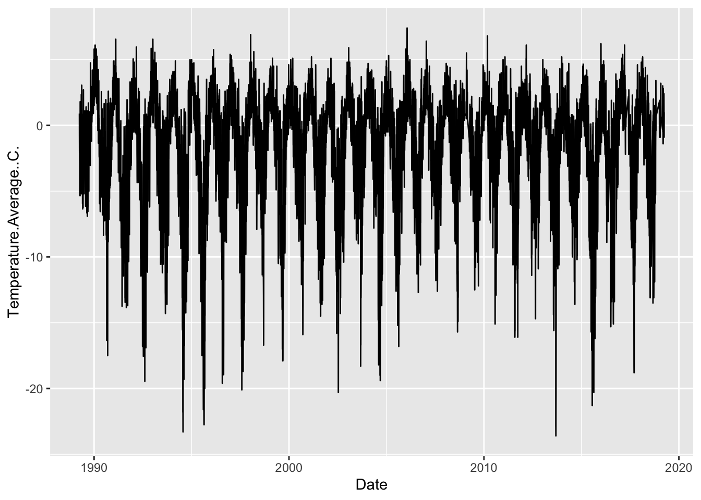

5 Visualization
- Plot architecture
ggplotaesgeom_
- Selecting geometries
geom_pointgeom_barandgeom_colgeom_boxplotgeom_line
- Styling (automatic and manual)
labstheme_scale_
- Facets
Create a scatterplot of bill length and body mass
ggplot(penguins, aes(x = bill_length_mm, y = body_mass_g)) +
geom_point()## Warning: Removed 2 rows containing missing values (`geom_point()`).
5.1 geom_point
ggplot(penguins, aes(x = bill_length_mm, y = body_mass_g, color = species)) + geom_point()## Warning: Removed 2 rows containing missing values (`geom_point()`). # Create a barplot of species counts
# Create a barplot of species counts
ggplot(penguins, aes(x = species)) + geom_bar() ## Facet
## Facet
ggplot(penguins, aes(x = bill_length_mm, y = body_mass_g)) + geom_point() + facet_wrap(~ species)## Warning: Removed 2 rows containing missing values (`geom_point()`).
weather %>%
ggplot(aes(x = Date, y = Temperature.Average..C.)) +
geom_line()
weather %>%
ungroup() %>%
filter(year != min(year) & year != max(year)) %>%
ggplot(aes(x = year, y = Temperature.Average..C., group = year)) +
geom_boxplot() ## Warning: Removed 11 rows containing non-finite values (`stat_boxplot()`).
5.2 Challenge
Conditional statements
weather <- weather %>%
mutate(penguin_data_year = case_when(
year %in% 2007:2009 ~ T,
T ~ F
) )weather %>%
filter(year != min(year) & year != max(year)) %>%
ggplot(aes(x = year, y = Temperature.Average..C., group = year,
color = penguin_data_year)) +
geom_boxplot() ## Warning: Removed 11 rows containing non-finite values (`stat_boxplot()`).